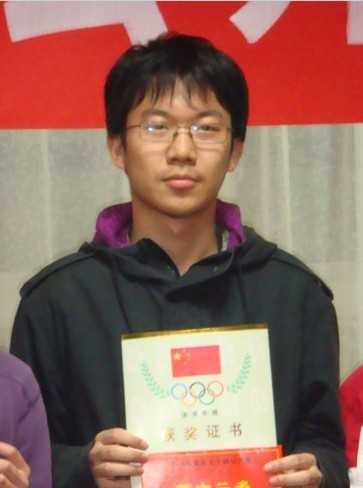

第一届全国智运会比赛项目车轮战受邀选手名单
首页
全国智运会专题
#1 第一届全国智运会比赛项目车轮战受邀选手名单 作者：无尽 发表时间：2009-11-3 11:41:30
车轮战受邀选手：
围棋：曹大元、廖桂永
象棋：洪智、赵鑫鑫、蒋川
国际象棋：叶江川、许昱华
五子棋：解村
车轮战比赛时间：
五子棋：2009年11月14日14：30―16：00
围棋、象棋：2009年11月18日14：30―16：00
国象：2009年11月19日9：30―11：00
车轮战比赛地点：
成都市温江区体育馆室外篮球场 ［ 茗弈宽容 于 2009-11-3 13:21:34 时花20金币送鲜花一朵］
#2 Re:第一届全国智运会比赛项目车轮战受邀选手名单 作者：茗弈宽容 发表时间：2009-11-3 12:57:33
求圣弟弟加油!
#3 Re:第一届全国智运会比赛项目车轮战受邀选手名单 作者：潇洒 发表时间：2009-11-3 15:17:07
 解村 不认识噢
解村 不认识噢
#4 Re:第一届全国智运会比赛项目车轮战受邀选手名单 作者：岳麓小棋皇 发表时间：2009-11-3 16:48:36
 解村 谁啊?谁给介绍下,潇洒老师送威望哦.
解村 谁啊?谁给介绍下,潇洒老师送威望哦.
#5 Re:第一届全国智运会比赛项目车轮战受邀选手名单 作者：屏蔽 发表时间：2009-11-3 17:41:59
村儿，你亮了。
06年5月是我见他第一次出来比赛，就是第一届北京市中学生团体赛
当时他是清华附的一台，那次比赛我十胜一负，他是唯一战胜我的人
之后接触过几次，也比较熟悉吧，可惜正式比赛中似乎没再遇见
现在水平应该和我差不多吧，没准还比我强
当时的对局：
=======上图对应的爱五子棋谱代码如下，以便你拆解：========
h8i9h7h9i7g9j9g7g8f9e9j7k6i8g10k5j5i4l7m6k9j8l8l6k7m9m7n6k10k8m8n9n7
====================================================== ［ 茗弈宽容 于 2009-11-3 17:44:49 时花20金币送鲜花一朵］
［ 无尽 于 2009-11-3 18:33:51 时奖励此帖[金币加 20 威望加1］
#6 Re:第一届全国智运会比赛项目车轮战受邀选手名单 作者：茗弈宽容 发表时间：2009-11-3 17:43:20
解村简历：
20岁，籍贯北京人，现就读于四川大学，主要战绩：
“北师大实验中学杯”首届中学生五子棋团体赛第3名（一台）；
“永安财产杯”北京五子棋大会战第18名；
首届四川连珠高校赛个人第6名；
首届四川五子棋公开赛第12名。
［ 棋心 于 2009-11-3 17:47:51 时花20金币送鲜花一朵］
［ 无尽 于 2009-11-3 18:33:37 时奖励此帖[金币加 20 威望加1］
#7 Re:Re:第一届全国智运会比赛项目车轮战受邀选手名单 作者：茗弈宽容 发表时间：2009-11-3 17:47:18

#8 Re:第一届全国智运会比赛项目车轮战受邀选手名单 作者：屏蔽 发表时间：2009-11-3 17:50:54
……
几年不见，竟然变帅了（捶地
#9 Re:第一届全国智运会比赛项目车轮战受邀选手名单 作者：松痕 发表时间：2009-11-3 18:08:10
应该是最惨的一个.
#10 Re:第一届全国智运会比赛项目车轮战受邀选手名单 作者：黄药师 发表时间：2009-11-3 18:32:22
请问解村车轮战的对手是谁？
大鱼+高飞+九指+……（几人？？？？）
#11 Re:第一届全国智运会比赛项目车轮战受邀选手名单 作者：无尽 发表时间：2009-11-3 18:34:52
围观群众吧 各种棋类的车轮战一般都是对普通爱好者...
各种棋类的车轮战一般都是对普通爱好者...
#12 Re:Re:第一届全国智运会比赛项目车轮战受邀选手名单 作者：笑雨辰 发表时间：2009-11-3 22:58:36
引用：
原文由 黄药师 发表于 2009-11-3 18:32:22 :
请问解村车轮战的对手是谁？
大鱼+高飞+九指+……（几人？？？？）
内定选手吧
就像某组织一样
****的事情
当然是****自己说了算
#13 Re:第一届全国智运会比赛项目车轮战受邀选手名单 作者：水月 发表时间：2009-11-4 0:53:47
本次比赛前十名。。。。哈哈
#14 Re:第一届全国智运会比赛项目车轮战受邀选手名单 作者：gigiqi 发表时间：2009-11-5 10:33:57
说的啥